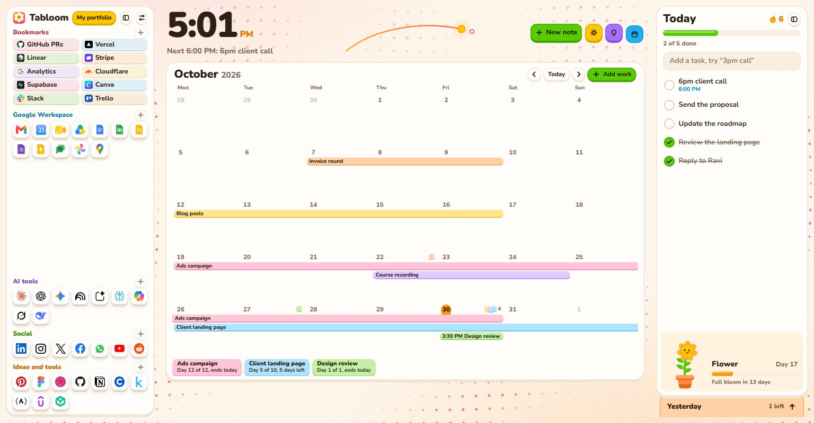
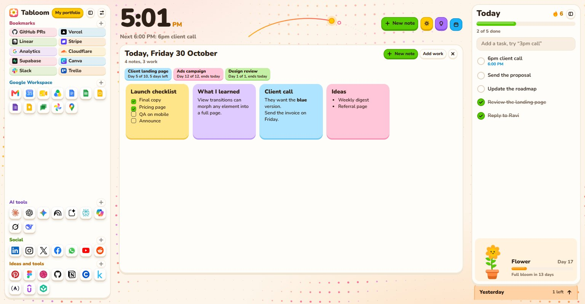
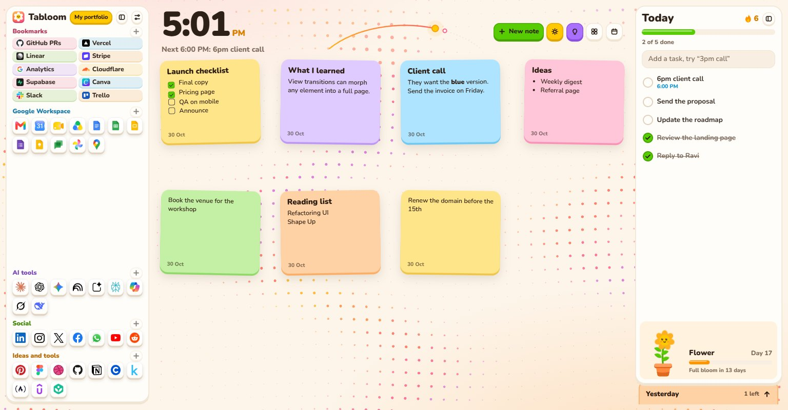
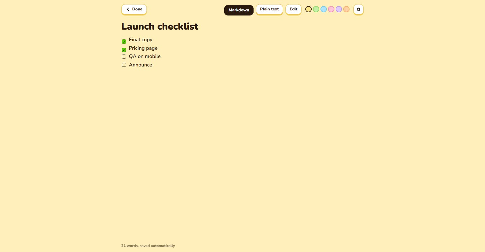
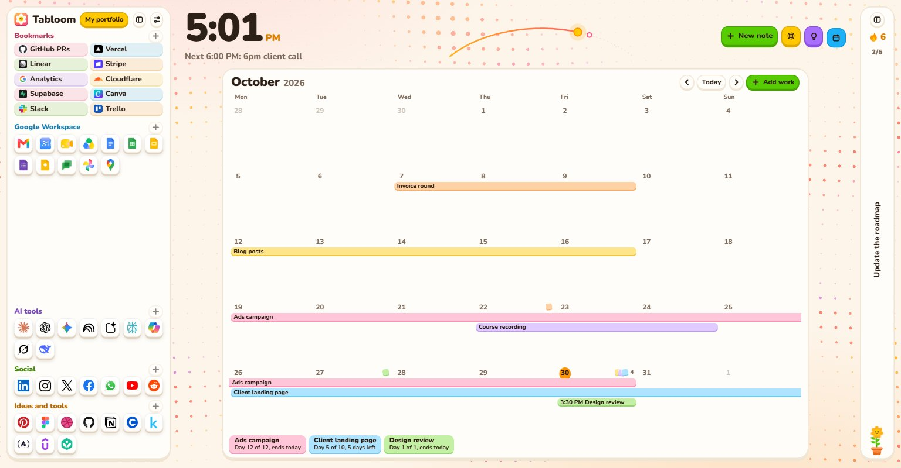

Your new tab, in bloom
A calendar for your work, notes kept on their dates, today's tasks and every tool you use, all one click from a new tab.
Free and open source. Works in Chrome and Edge.

What's inside
- Work calendar
- Drag across days to plan a job. Bars show how long each one runs and how many days are left.
- Notes on their dates
- Click a date and it opens into that day's notes and work. Or switch the calendar off and let notes float.
- Markdown or plain text
- Every note opens full page. New note reuses an empty one, so blanks never pile up.
- Today panel
- Tasks, a progress bar and a streak. Earlier days wait in a card tucked underneath.
- Bloom
- A small plant that grows every day you show up, and never wilts.
- Save from anywhere
- Select text on any page and right-click to send it to notes, What I learned or to-dos.
- All your links
- Bookmarks, Google Workspace, AI tools and social, with real icons. Add your own or import in bulk.
- Meetings and recent docs
- Connect your calendar's private link to see what's next, with a Join button.
- Your background
- Dots, grid lines, aurora, fireflies, stars, bubbles or a snake that plays itself. Or your own image with blur.
- Made for small laptops
- Everything scales from a 14 inch screen upward. Collapse either side when you want room.
A closer look




Install in a minute
- 1Download the zip and unzip it somewhere you'll keep it.
- 2Open
chrome://extensionsand turn on Developer mode. - 3Click Load unpacked and pick the unzipped folder.
- 4Open a new tab and keep Tabloom when the browser asks.
Your data stays yours
No account and no tracking. Notes, tasks and links stay in your browser, and you can export them to a file at any time. Removing the extension deletes them, so export first.